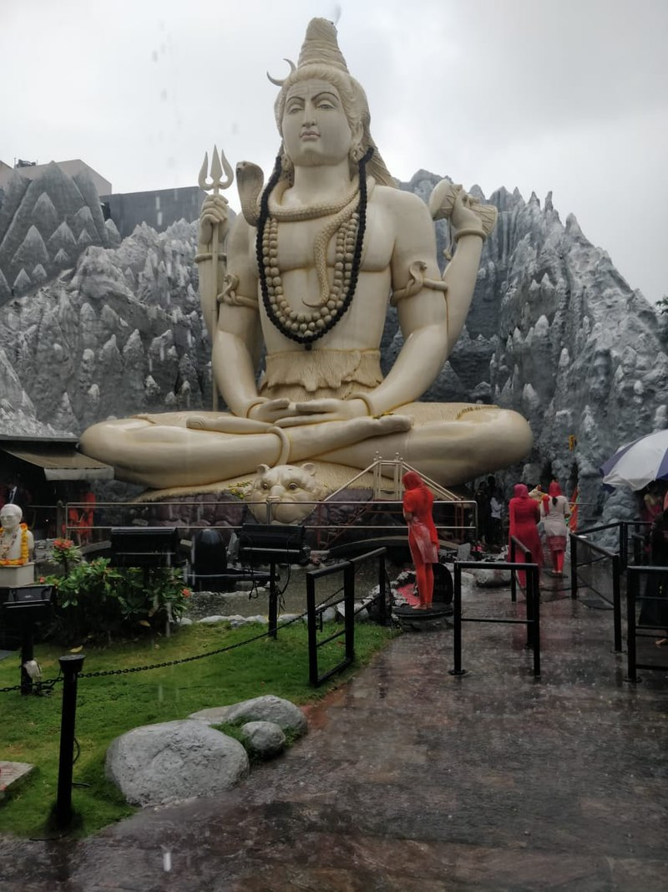

INTRODUCTION
Geography
Bangalore lies in the southeast of the South Indian state of Karnataka. It is in the heart of the Mysore Plateau (a region of the larger Precambrian Deccan Plateau) at an average elevation of 920 m (3,020 ft). It is positioned at 12.97°N 77.56°E and covers an area of 1741 km2 (673 mi2). The majority of the city of Bangalore lies in the Bangalore Urban district of Karnataka and the surrounding rural areas are a part of the Bangalore Rural district. The region comprising the Bangalore Urban and Rural districts is known as the Bangalore (region). The Government of Karnataka has carved out the new district of Ramanagara from the old Bangalore Rural district..
Demography
Bangalore is a megacity with a population of 8,443,675 in the city and 10,456,000 in the urban agglomeration, up from 8.5 million at the 2011 census. This makes it the third-most-populous city in India, the 18th-most-populous city in the world and the fifth most populous urban agglomeration in India.Bangalore was the fastest-growing Indian metropolis after New Delhi between 1991 and 2001, with a growth rate of 38% during the decade. Residents of Bangalore are referred to as "Bangaloreans" in English, Bengaloorinavaru or Bengaloorigaru in Kannada and Banglori in Hindi or Urdu. People from other states have migrated to Bangalore, study, or work there as well..
According to the 2011 census of India, 78.9% of Bangalore's population is Hindu, a little less than the national average.[93] Muslims comprise 13.9% of the population, roughly the same as their national average. Christians and Jains account for 5.6% and 1.0% of the population, respectively, double that of their national averages. The city has a literacy rate of 89%.[94] Roughly 10% of Bangalore's population lives in slums.[95]—a relatively low proportion when compared to other cities in the developing world such as Mumbai (50%) and Nairobi (60%).[96] The 2008 National Crime Records Bureau statistics indicate that Bangalore accounts for 8.5% of the total crimes reported from 35 major cities in India which is an increase in the crime rate when compared to the number of crimes fifteen years ago.


Languages in Bengaluru
Fondly addressed as the Silicon Valley of India, Bangalore is the capital of the Indian state of Karnataka. Recognized as the most multilingual district in India, a total of 107 languages are spoken in Bangalore.
And as people from all corners of India found their way into Bangalore, they infused the city with their language, culture, food, and traditions. And that has shaped Bangalore into what it is today – a multilingual urban settlement with rich cultural diversity.
Exploring Bangalore’s Language Diversity
Among all the languages spoken in Bangalore, Kannada is the most popular. Kannada is the mother tongue of almost 45% of Bangaloreans. It is perhaps the most important and the most spoken language in Bangalore.
In 2008, rules framed under the Karnataka Shops and Commercial Establishments (Amendment) stated that Kannada should have prominence on a name board of a business establishment. It also added that a fine would be imposed if any business failed to comply. But in 2009, Vodafone Essar South challenged these rules in the Karnataka High Court. And the judgment by Justice Subhash B Adi said, “The state in a hurry to make a Kannada display board on the establishment has substituted Rule 24-A by amendment, State cannot ignore its limitation. Under the guise of delegated legislative power, State cannot traverse beyond its limits of delegation nor frame such rule which was not even contemplated under the provisions of the Act.”
Tamil holds the 2nd position at 15.2%. And the third most spoken language in Bangalore is Telugu at 14%. The next common language is English. While a majority of the younger generation of the city speak English, it is also the official language of communication in many places.
About 12% of the population speaks Urdu, making it the 4th most spoken language. While Hindi, the national language of India, stands at 6% in the garden city.